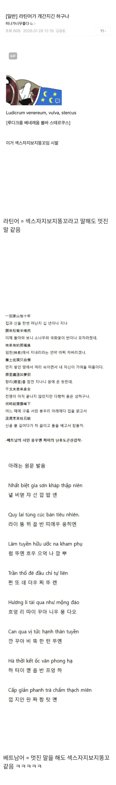

ㅋㅋㅋ 진짜 성조 에바긴 해

ㅋㅋㅋ 진짜 성조 에바긴 해
언어 자체가 인종이라는 얘기가 아니라, 특정 민족·국적 집단을 상징하는 언어를 동물 소리에 빗대어 비하하는 게 문제라는 거야.
인종·민족적 비하는 반드시 ‘너희는 열등하다’고 직접 말해야만 성립하는 것도 아니고. 정확히 말하면 베트남인에 대한 민족·국적 기반의 비하 표현이라고 하는 게 맞겠지.
이게 넓은 범주에서 인종차별인거고.
음 그렇군요. 특정 동물에 빗댄적이 없긴 하지만 잘 알겠습니다.
뭐 예를들자면이야 무튼 그렇게 안했다고 해서 인종차별이 아니게 되는건 아니니까 ㅇㅇ..
베트남어가 듣기 거북하다, 쎄게 말해서 듣기 좆같다고 말해도
그게 인종차별이라고 규정하긴 어렵다고 생각함.
언어를 비하의 대상으로 삼고 있지 그걸 사용하는 사람들을 겨낭한게 아니니까.
걍 베트남 사람이 아니라 핀란드 엘프녀였어도 입에서 저 말나오면 ㅈ같았을거임.
내 스탠스는 딱 이정도야
아니 그... 언어나 문화를 비하의 대상으로 하는 것도 일반적으로 인종차별의 범주에 포함된다는 것은 일단 차치하고 그보다 다른 나라의 문화나 언어를 비하해서는 안 되겠다는 생각은 안 드는 거임?
ㅇ 그래말하면 언어비하한거 맞음. 그럴라고 가져온거니까.
인종차별하지말라는 더 자극적인 워딩을 쓰길래 인종차별아니라 답한게 뭐가 문제야
자기가 듣기에 이상하게 들리는 다른 나라 언어를 비웃고 조롱하는 게 아주 대표적인 인종차별 레퍼토리라는 거임. 가령 일본인이 한국인들을 보고 요보라거나 NIDA 라고 부르는 게 대표적인 예시고.
그건 그렇고 닉네임이 눈에 익어서 보니까 예전에 왜 동성애를 좀 더 혐오하지 않느냐고 글 썼던 걔구나 일단 방향성 하나만큼은 초지일관하다는 말을 해 주고 싶네...
자 봐봐.
내가 듣기에? 대부분이 듣기에.
암튼 듣기에 ㅈ같은걸 ㅈ같다고 했어. 저주받은 언어라고 한거 맞아.
저기 어디에 동남아인종이라 하는 말 꼬라지도 저모양이구나 하는 뜻이 있음?
할렘가는 우범지역이고 범죄율이 높습니다 하니까 인종차별이라고 머라하는걸 보는 기분이라니까?
별개잖아
씹새끼라고 욕을 하더라도 인종차별하는 씹새끼로 만들지 말라고.
인종차별 아니니 잘못하지 않았습니다 라는 말은 1도 내비치지 않음.
그냥 인종차별이 아니라고.
바로 아래에 다른 예시도 있잖아. 외국에서 누가 아시아인 보고 칭1챙총 칭1챙총 하고 조롱했다가 욕 먹을 상황이 되니까 “난 니들 하는 말이 듣기 좆같아서 조롱한 것 뿐 인종차별 한 건 아니야 나를 인종차별하는 씹새끼로 만들지 말아줘” 하면 어디서 통할 것 같음? 그냥 니가 한 게 인종차별이고 너는 인종차별하는 씹새끼라는 걸 받이들이는 게 어떨까 싶다.
뭐 그래라
그만 좀 끄지라 오유같은데로 좀 끄지라고
야 동남아 새끼들이랑 대화 안되는 거 처럼
저 새끼랑도 대화가 되겠냐?
저 새끼 말하는게 저능아 새끼 같은데 ㅋ
근데 나도 베트남 새끼들 욕하는 중이라...
니 주변에 학력 좋다 싶은사람 붙잡고 베트남어 좆같다는데 인종차별 아니냐고 물어봐라
단순히 베트남어가 듣기 싫다는건 언어비하이지 베트남인에 대한 인종차별이 아님. 그냥 반박할거 없는 진리야
본문과 댓글엔 인종차별 발언이 0.1mg도 없음.
뭐 말장난 아니냐고? 너 응우옌혐오하는거 아니냐고? 그럴지도 모르지. 근데 내 맘을 니들이 어케 아냐?
난 그런 의도로 안썼고, 본문에 그런 내용이 없는데?
https://www.dogdrip.net/726024809
ㅅㅂ 솔직히 가슴에 손을 얹고 이게 듣기 좋을리가 없잖아.
말그대로 언어가 좆같다고.
중국말 좆같다, 인스타 개 이쁜 여자도 중국말 나오면 깬다 이러면 이게 인종차별이라 생각됨? 인종차별하곤 좀 결이 다르지않냐?
첨부터 걍 윤리적으로다 남의 나라 문화를 비웃지말라 그러면 내가 머 할말있나.
니가 베트남 새끼들 욕하는거마냥 나도 욕할라고 가져온건데.
근데 인종차별하지 말래잖아. 한적이 없는데 뭘 하지말란거
베트남어 좆같다고 하는데 베트남어 알고 그런 말을 하는거? 아니면 모르면서 배그사태 때문에 혐오 물타기 한다고 거기 탑승해서 말하는거?
내가 하는건 인종차별이 아니라 언어차별이라고 하면서 궤변을 하는데
"니가 베트남 새끼들 욕하는거마냥 나도 욕할라고 가져온건데" 라고 하는데 이게 인종차별 아님?
어우 인종차별 아닌 욕이 없는 세상인가보다
한둘이 아닌거보면 내가 잘못한거 맞네 그냥
베트남 쪽에서 잘못한건 방플한 베트남 선수들과 그걸 옹호한 사람들, 한국 스트리머에게 2차가해 한 사람들인데
베트남을 싸잡아서 말할게 아니라 그것에 대해서 말을 해야지
언어 가지고 와서 물타기로 지랄 하는건 잘못한거 맞음
꼴에 자존심때문에 비아냥까지 하는거 보면 ㅋㅋ
이런글에 추천 5개
동남아 새끼랑 동급이네
칭칭칭 챙챙챙
이거 하나로 모든 게 설명 가능
개후진국 그만까자 이런 식의 네거티브는 일본 원숭이들이랑 다를 게 없다
후진국이라고 까는게 아닌데? 오해하지마셈. 이건 그냥 발음이 응우옌같다는 거야
깜 뿌 뚜롄
아니 근데 실제로 조금만 뻥하게 생긴 남자가 베트남어 하면 영구가 생각남....
살다살다 중국어보다 더 듣기싫은소리 첨임
차 끓이고 돌을 베개삼아 자볼까 >> 짜짬탕면
발음이 가성비가좋네 ㅌㅋㅋㅋㅋㅋ
??? : "불어는 실크로 똥고닦는 기분이 드는 언어"
이번 이슈를 배제하더라도 진짜 발음 존나 어렵겠네
발음은 어쩔수없다치고 콧소리 어떻게 못하나? 미친놈들이 영어할때도 콧소리 앵앵거림
대한민국 국민들은 장염, 노로바이러스에 걸릴경우 베트남어를 구사할수 있게된다
그 뭐냐 동납아 랩배틀 생각나네 ㅋㅋㅋㅋ
그 다른나라언어가지고 뭐하하긴 그렇긴한데 어느 외국인이 그러더라 장애인굴러가는 소리같다고
그 노래는 좋던데 띵띵땅땅하는거
이거 또 베트남 커뮤니티에 들어가면 거기 살고있는 한인들 피해보겠구만 에효
빵상 깨랑까랑
중국어는 한자 축약으로 은유스러운 시적 표현이라도ㅈ가능하지..
그냥 우리말로 이상하게 들리는 거 같은데
후광효과임 쟤들이 열강이었다면 저게 멋잇게 들렸을거임
그건아님 대영제국이 아무리강해도 음식이 맛있진 않음
6성조 시발
옛날에 양놈이 인스타나 틱톡 댓글달았던거 생각나는데 ... 베트남어 듣고 생각나는게 저능아를 계단에서 굴러 밀어 떨어뜨리면 나는 소리 같다고 까던데
베트남 여친하고 동거하는 친구가 있는데 걔랑 게임 하면서 디코 켜놓으면 진짜 귀가 너무 힘듦...
임페리움 세쿤두스!!!
크 간지보소
중국어는 일상회화에서 떽떽거리는 경우가 많아서 좆같지 사근사근하게 말하거나 사극 무협 이런데선 걍 좋은데 베트남어뿐만 아니라 동남아쪽은 다 상태가...
성조<- 이 씨발련이 진짜범인임
베트남어가 인종에서 기인된게 아닌데 뭔 인종차별임.
내가 저 언어를 쓰니까 미개하다, 열등하다고 표현하기라도 했음?
인종차별과 별개인거 맞음.
물론 화자의 의도에 따라 인종차별의 일환으로 언어를 비하하는 경우가 있을 수도 있음.
근데 이 글 어딜 보고 내 의도가 위와 같다고 판정한거임?